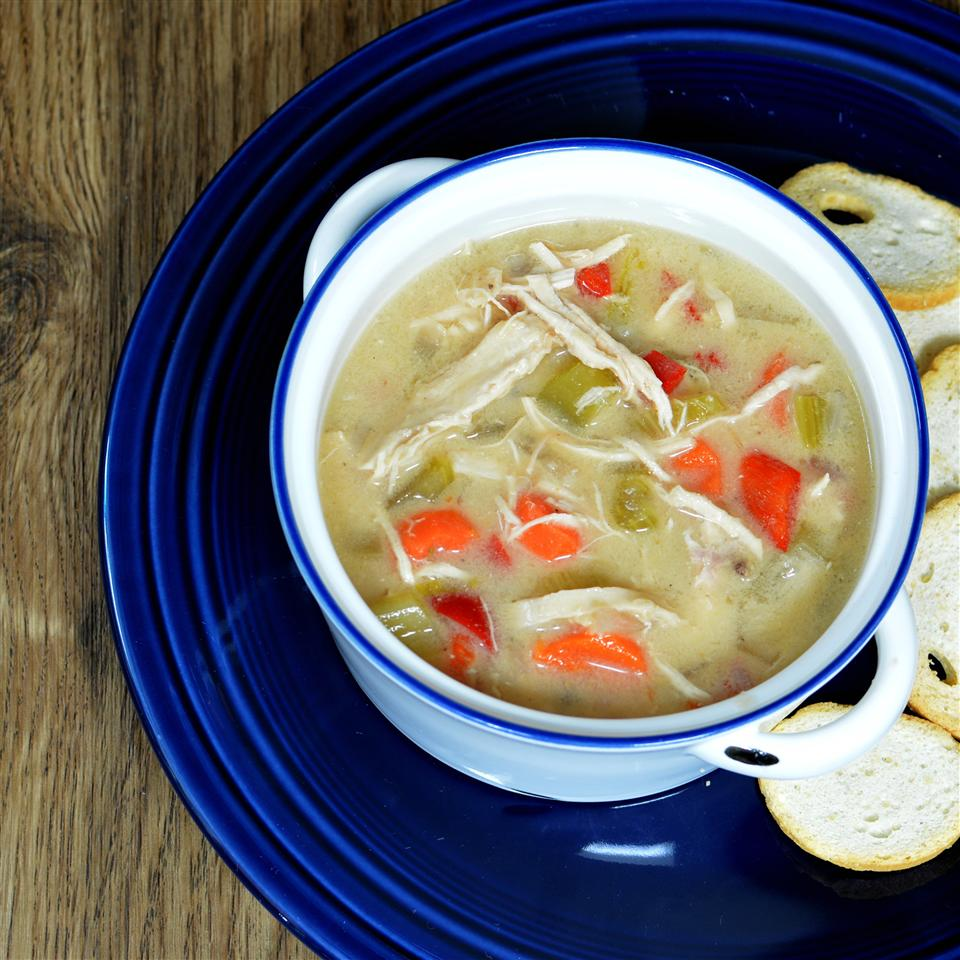

Chicken Soup
I’ve been a soup lover my entire life. Tony would tell you that it’s true because he’s the one stuck eating my delicious soup recipes that I bust out weekly. This chicken soup recipe came to me after I came down with the WORST cold ever. I was on the verge of getting better, then all of a sudden I took a turn for the worst and spent an entire weekend sneezing, coughing and barely able to breathe.
Ingredients
- One large onion
- One cup celery
- One cup carrots
- Two cups mushrooms
- Four cups chicken Broth
- Four chicken breasts
- Salt and pepper to taste
- Four tablespoons thyme seasoning
Directions
- Chop vegetables
- Mix all ingredients in slow cooker
- Cook on low for 6 to 8 hours
- Remove chicken, shred with forks, then return chicken to the soup.
- Serve with fresh bread and a dollop of sour cream.